Onduleur à six MOSFETs, commande vectorielle SVPWM et détection de position par Back-EMF
Dans le cadre du module d'électronique de puissance, j'ai développé un Electronic Speed Controller (ESC) basé sur un onduleur triphasé intégrant une commande vectorielle (FOC). Cette approche vise un contrôle optimal des moteurs BLDC/PMSM : rendement élevé, réponse dynamique rapide et maîtrise précise du couple et de la vitesse.
Avant la réalisation, une simulation complète sous MATLAB/Simulink a servi à modéliser le comportement du moteur et à valider l'algorithme de commande, en trois étapes :
L'algorithme extrait la position angulaire en temps réel pour identifier le secteur du rotor
À partir de l'angle, le modèle calcule le vecteur optimal selon la stratégie de commande vectorielle
La modulation SVPWM pilote les six MOSFETs du pont triphasé pour une commutation fluide et efficace
Une fois la simulation validée, la partie matérielle a été conçue et testée :
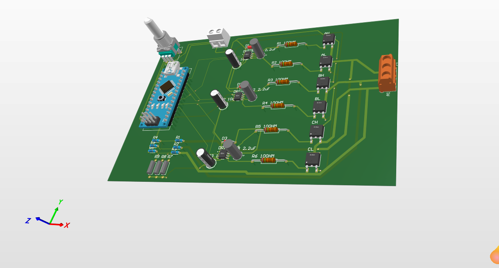
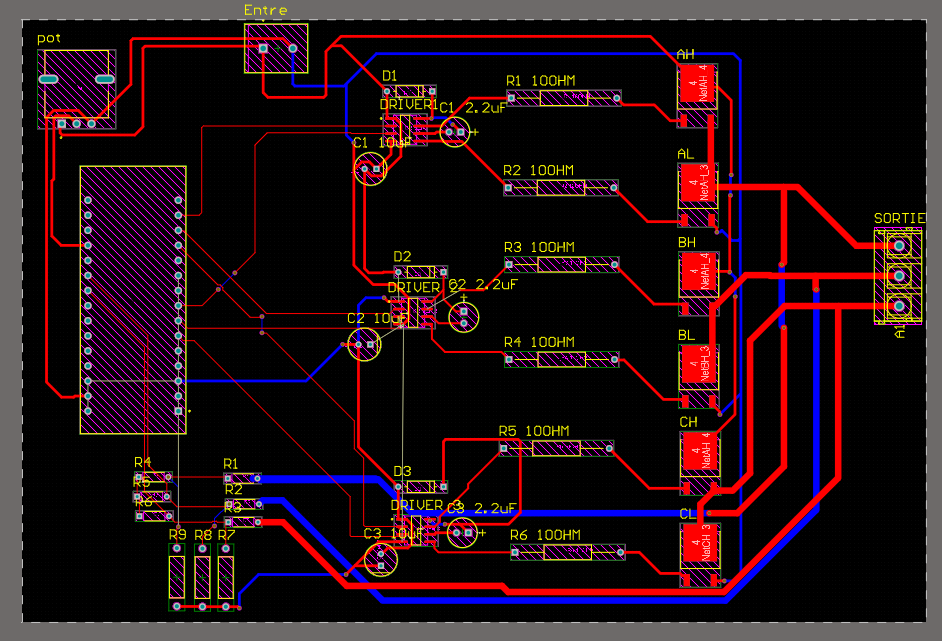
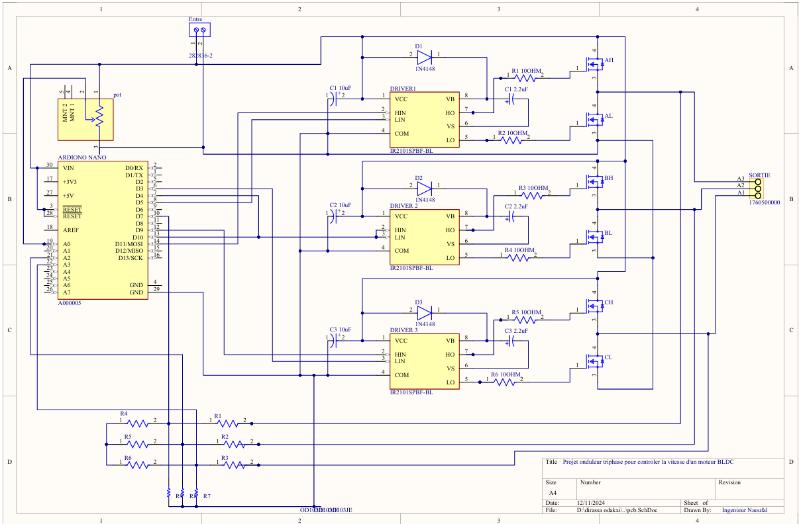
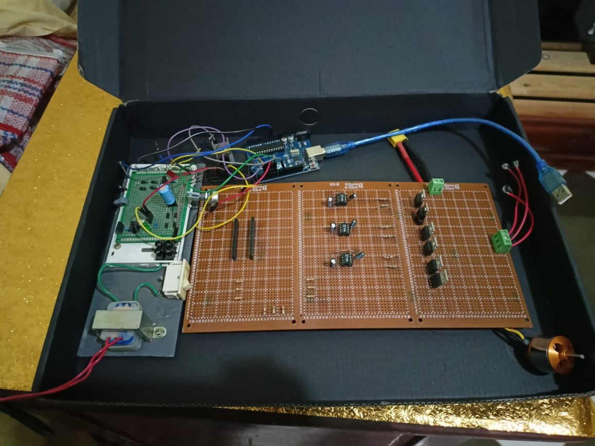
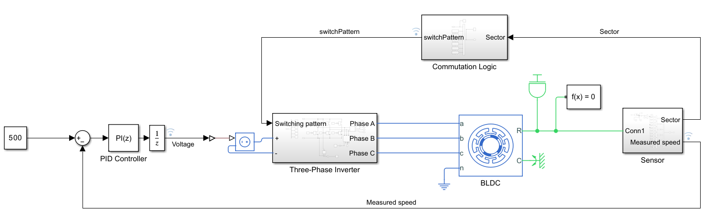
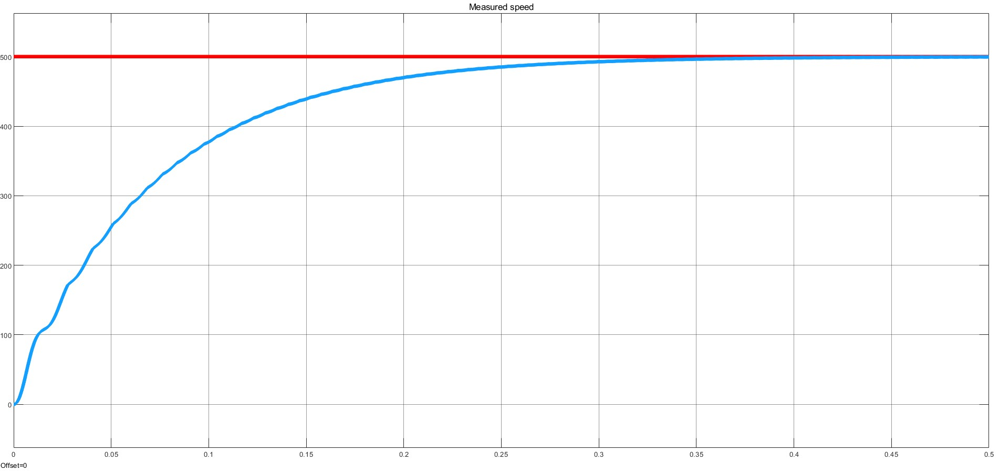
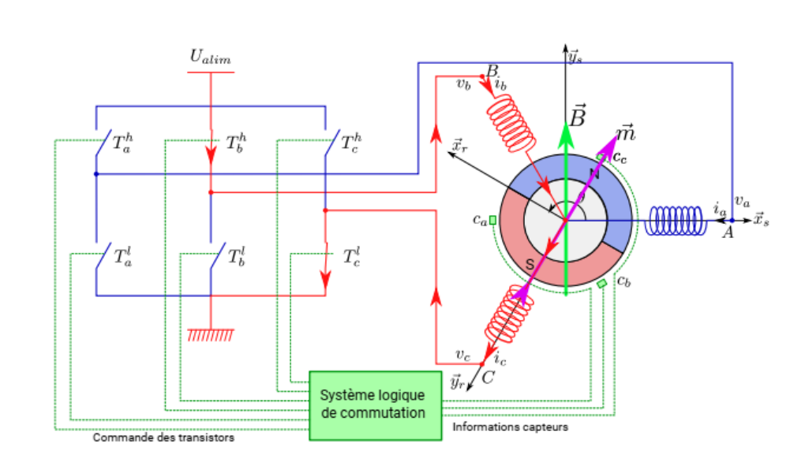
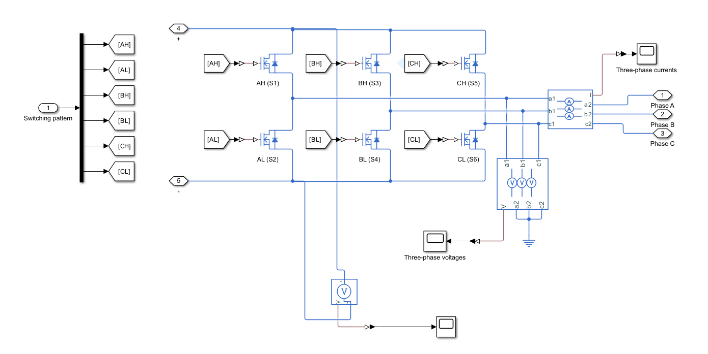
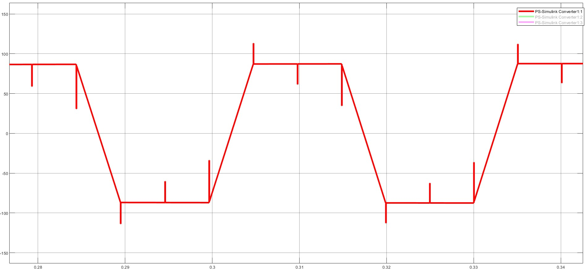
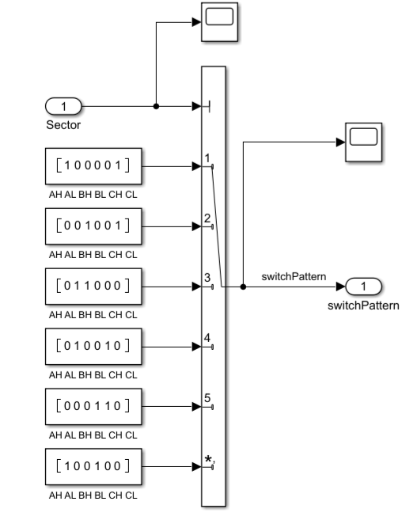
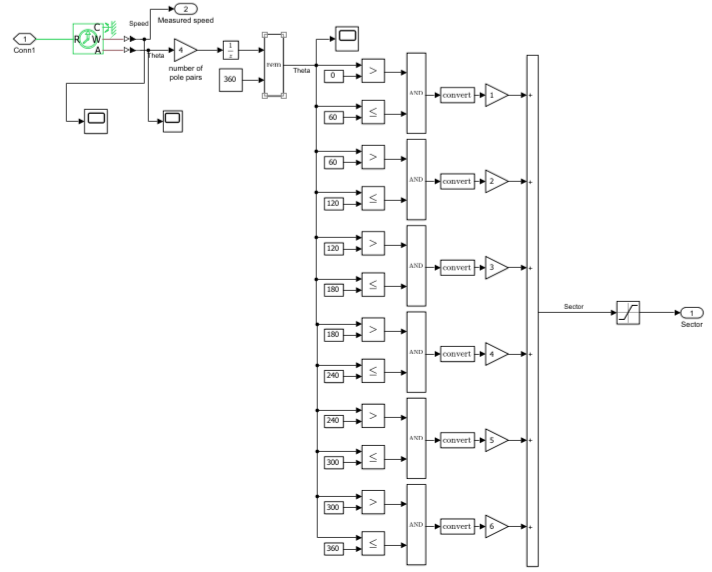
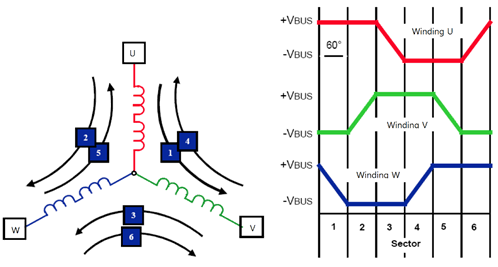